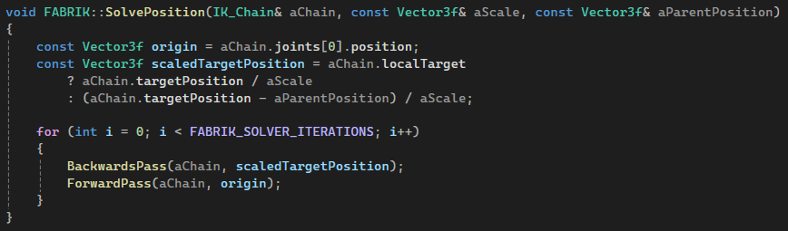

About Me
Games
Specialization
Game Jams
Zengine
Procedural Animations Using FABRIK
TGA offers a course were the student gets to specialize in an area in which they are intrested in.
So I decided to specialize in procedural animations and developing an Inverse Kinematics alghoritm using the FABRIK (Forward And Backwards Reaching Inverse Kinematics) method.
And with the finished inverse kinematics I wanted to recreate the subtle hand animations from Uncharted 4: A Thief's End.
I made the project in my own custom C++ DirectX11 game engine.

FABRIK Implementation
The implementation of the position solving was straight forward. Perform the passes a number of iterations. But I found that a single iteration is enough for my joint chain. But for larger joint chains more iterations was needed.
And you can also set a flag in the chain to decide if it should use the target local to its own space, set it so it uses world space and the models transform.
Passes
The FABRIK algorithm operates in two key passes to adjust joint positions efficiently:
Backward Pass
The chain starts from the end effector and moves backward toward the root. This step ensures that the end effector reaches the target while maintaining segment lengths.
Forward Pass
The chain then moves forward, repositioning joints while keeping the root in place. This step restores the structure while maintaining the target alignment.
Joint Rotations
The SolveRotation step in FABRIK adjusts joint rotations after their positions are updated. It iterates through each joint (except the last) to align it with the next joint in the chain. For the last joint, it adjusts its rotation to face the target position.
Using quaternions ensures smooth rotations and avoids problems like gimbal lock, maintaining both correct positions and natural orientations.
Why FABRIK?
I chose to use FABRIK since it was more suitable and optimized for game development. But even though the alghoritm was more suited for games, it still came with a big flaw.
It only works with positions, so rotations is needed to be calculated manually.
FABRIK also seemed to be the simplest method to implement, which fits into the short timeframe in which the course lasts.
WRITE MORE?
Contact me at: email@example.com
LinkedIn
|
GitHub